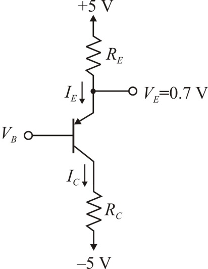

Design a circuit using  transistor for which
transistor for which  using two resistors connected appropriately to so that and .
using two resistors connected appropriately to so that and .
It is given that  , hence
, hence
Emitter to base voltage is

Design a circuit using transistor for which using two resistors connected appropriately to so that and .
It is given that , hence
Emitter to base voltage is
Consider below transistor circuit diagram with two resistors is shown in Figure 1.

Figure 1
Applying Kirchhoff’s voltage law to the emitter branch we obtain
Thus, the value of emitter resistor is: .
The Base to collector voltage is,
Applying Kirchhoff’s voltage law to the collector loop we obtain
Thus, the value of collector resistor is: .
By considering  tolerance standard resistor values, the values of
tolerance standard resistor values, the values of  and
and  becomes
becomes
and .
Therefore, the chosen resistor values are: and .
Applying Kirchhoff’s voltage law to the emitter branch we obtain
Thus, the value of current flowing through the emitter terminal is: .
Applying Kirchhoff’s voltage law to the base to collector loop .
Thus, base to collect voltage is .